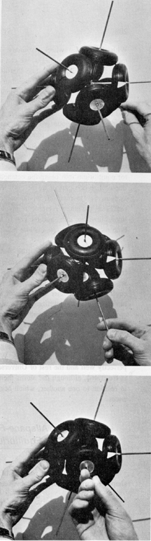

|  |
| Fig. 465.10 The vector equilibrium with wheels showing that when one wheel is immobilized (the lower wheel in photos) and the system is rotated about the axis shared by the fixed wheel and its opposite wheel, the opposite wheel remains stationary but the other six wheels rotate in concert. The polarity of the system is thus demonstrated. |